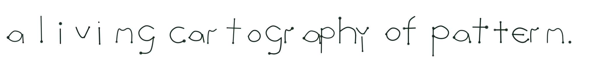
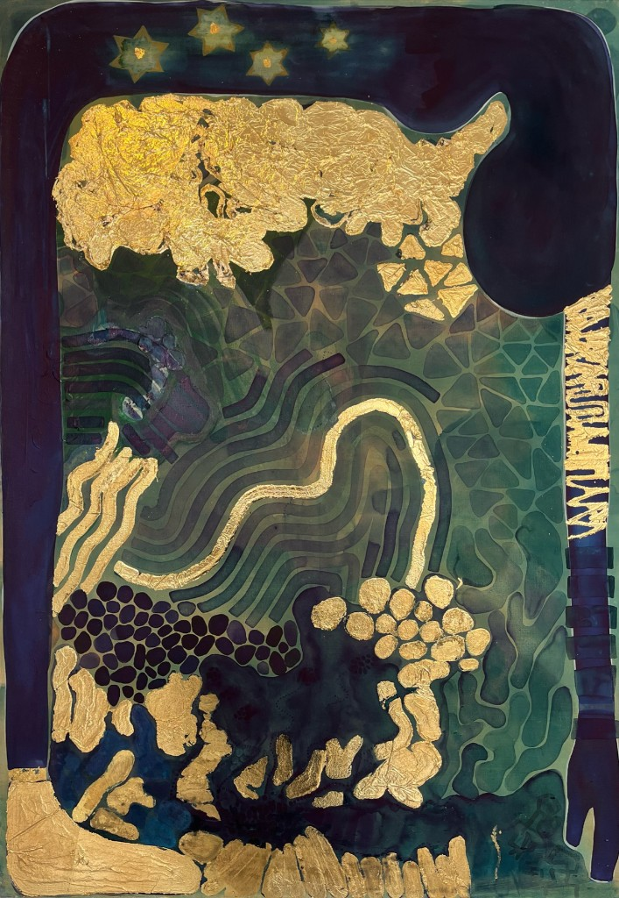

NUT | €1400 | 70 x 100 cm | Canvas
Sophie Rushton is an artist exploring the relationship between nature, memory, and Indigenous textile cosmologies. Her work draws from biological structures, symbolic language, Amazonian kene, Andean tocapu, and mathematical coincidences such as the Fibonacci sequence to create visual systems shaped by rhythm, repetition, and transformation, balancing chaos and order through small geometric motifs.
For Sophie, creating is also a way of thinking through time. Repetition stretches minutes into hours as forms emerge slowly through accumulation rather than intention. Structure gives uncertainty somewhere to unfold, while uncertainty prevents structure from becoming static.
Working across ink, print, embroidery, and goldwork, Sophie creates bespoke pieces using initials, symbols, organic forms, and repeated marks. Each work becomes a personal visual language, balancing structure, story, and intuition.